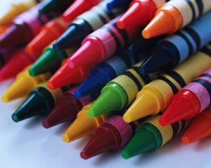
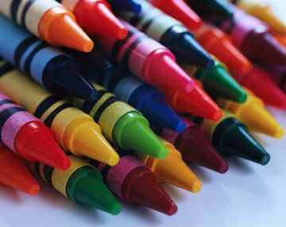
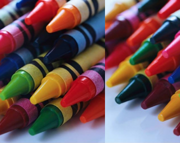
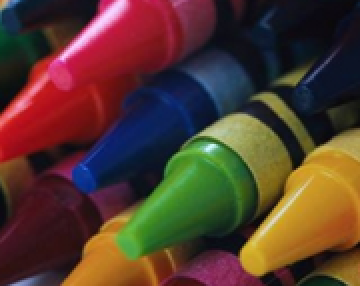
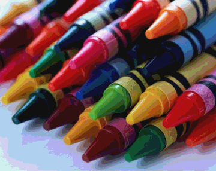
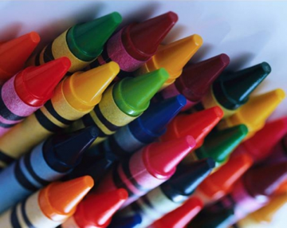
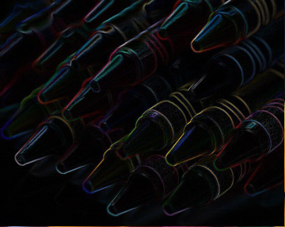
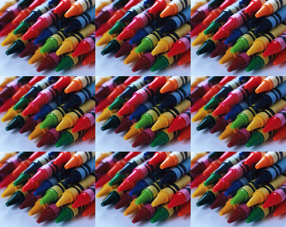
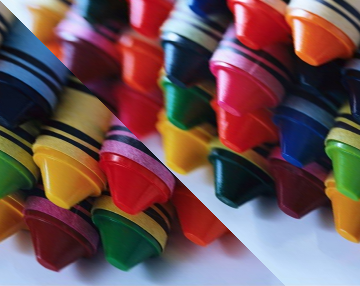
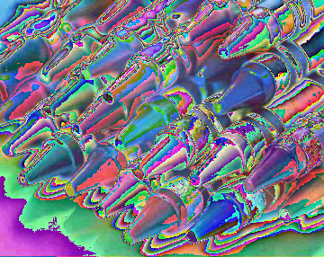

The purpose of this lab is to:
Copy your monte.py program from lab 03 to your lab04 directory and modify it to handle the exception that is thrown when the user inputs n=0.
Copy your pyramid.py program from lab 03 to your lab04 directory and modify it to handle the exception that is thrown when the user inputs n=0. If your pyramid just doesn't draw any bricks instead of throwing an error, check if you're calculating the size of the bricks inside your for loop - if so, move that calculation before the for loop, and you shoud throw an error if n=0.
Handin:
Handin what you have of your lab so far.
master.py: 10 points, partner
Mastermind is a neat (although oftentimes frustrating) puzzle game. It works a something like this: There are two players. One player is the codemaker (your program), the other is the codebreaker (the user). The codemaker chooses a sequence of four colored pegs, out of a possible six colors (red, blue, green, yellow, orange, and purple). He may repeat colors and place them in any order he wishes. This sequence is hidden from the codebreaker. The codebreaker has 10 chances to guess the sequence. The codebreaker places colored pegs down to indicate each of her guesses. After each guess, the codemaker is required to reveal certain information about how close the guess was to the actual hidden sequence.
Describe the Problem:
Write a program called master.py that allows the user to play a text-based version of the fantastic game Mastermind.
input: repeatedly get guesses from the user, until they either guess the code, or run out of guesses.
goal: generate a random code, and correctly provide the user with feedback on their guesses.
Understand the Problem:
The trickiest part of this game is determining how to provide feedback on the codebreaker's guesses.
In particular, next to each guess that the codebreaker makes, the codemaker places up to four clue pegs. Each clue peg is either black or white. Each black peg indicates a correct color in a correct spot. Each white peg indicates a correct color in an incorrect spot. No indication is given as to which clue corresponds to which guess.
For example, suppose that the code is RYGY (red yellow green yellow). Then the guess GRGY (green red green yellow) would cause the codemaker to put down 2 black pegs (since guesses 3 and 4 were correct) and 1 white peg (since the red guess was correct, but out of place). Note that no peg was given for guess 1 even though there was a green in the code; this is because that green had already been "counted" (a black peg had been given for that one).
As another example, again using RYGY as our code, the guess YBBB would generate 1 white peg and 0 black; yellow appears twice in the code, but the guess only contains one yellow peg. Likewise, for the guess BRRR, only 1 white peg is given; there is an R in the code, but only one. Below is a table with guesses and the correponding number of black and white pegs given for that guess (still assuming the code is RYGY).
| guess | black pegs | white pegs |
|---|---|---|
| YYYY | 2 | 0 |
| YRYR | 0 | 3 |
| BBPO | 0 | 0 |
| PGYR | 0 | 3 |
| YYYG | 1 | 2 |
| RYGY | 4 | 0 |
Check here for an online graphical version of the game (where their red pegs are our black pegs).
A sample run of our text-based program may look like this:
%python3 master.py
I have a 4 letter code, made from 6 colors.
The colors are R, G, B, Y, P, or O.
Your guess: GGGG
Not quite. You get 0 black pegs, 0 white pegs.
Your guess: YYYY
Not quite. You get 1 black pegs, 0 white pegs.
Your guess: YOYO
Not quite. You get 0 black pegs, 2 white pegs.
Your guess: PPYO
Not quite. You get 1 black pegs, 2 white pegs.
Your guess: POYB
Not quite. You get 1 black pegs, 3 white pegs.
Your guess: PBOY
You win! Aren't you smart.
Design an Algorithm:
Once you understand how the game works, you should design a pseudocode plan of attack. The general steps are:
Implement a Design:
Now that you have some of the kinks worked out in theory, it is time to write your program master.py.
You may assume the user always provides a guess with the available colors, and always in uppercase.
Make and use an integer constant NUM_TURNS that represents the number of allowable turns (say, 10).
To generate the code, write a function
generateCode()
that generates the codemaker's code (and returns it as a String to the caller). That is, this function should randomly generate 4 colored pegs, selected from R, B, G, Y, O, and P, and return it as a 4-letter string. You'll want to use the random functions as discussed in lab03 in order to randomly generate a color for each peg. In particular, you'll generate an integer between 0 and 5 inclusive, and use if-statements to map each result to one of the 6 colors.
Test your generateCode function thoroughly before continuing. No, seriously, test it before continuing. Once it's working, write a second function
clue( code, guess )
that prints out the white and black clue pegs according to the given guess and code, and returns true if code equals guess, and false otherwise. Translate the pseudocode above to help you out.
You can "change" the ith character in a string s to an 'x' as follows:
s = s[0:i] + "x" + s[i+1:len(s)]
Also note you can omit the len(s) from the above expression. That is, if you write s[i:], Python interprets that as the substring of s from position i to the end. Similarly, s[:i] denotes the substring of s from the beginning up to (but not including) i.
Create a program called sketchy.py that draws the picture you designed on your prelab using the picture module. A few of the things you can do:
To adjust the pen width, use the setPenWidth function. To position and draw with the pen, use the setPosition, setDirection, rotate and drawForward functions. To draw simple shapes, you can use functions like drawCircle, drawCircleFill, drawRect, drawRectFill, etc. Use setFillColor to change the fill color used when creating shapes. Use setOutlineColor to change the color of shape edges and pen lines. Don't forget to use the display function followed by an input function call so your image gets displayed, and gives you time to savor your creation before closing the window.
You can read more about different picture functions here
The best sketches will be shown off in class to general acclaim.
Handin:
Please handin what you have of your lab so far.
In this (major) portion of the lab you'll create a nifty program that reads in an image and does a sequence of modifications to that image, as specified by the user. Things like inverting the image, mirroring it, increasing or decreasing the contrast, etc. In doing so, you'll get more practice with nested for loops, while loops, creating functions and using objects.
It turns out that Python 3 doesn't support sufficiently fast image manipulation for our purposes, so for this portion of the lab we're going to be stepping down to Python 2 temporarily. The impact of this should be pretty minimal for you. The changes you'll see should be limited to the following:
(1) To run your program, you'll use the command
python myProgram.pyrather than
python3 myProgram.py
(2) Print statements don't have parentheses. So you'd write
print "The value of x is",xrather than
print("The value of x is",x)
(3) The input function works a little differently, so to get a string form the user use raw_input. That is, use
fileName = raw_input("Please enter the image file you'd like loaded: ")
rather than
fileName = input("Please enter the image file you'd like loaded: ")
(4) We'll be using a different (though very similar) image module called picture2.
Describe the Problem:
Write a program called imageEdit.py that provides the user with image editing functionality.
input: Get a string filename from the user that represents the image they would like to edit.
output: Allow the user to edit the image given the provided editing options. Display their results to the screen and enjoy!
Understand the Problem:
Your program should be capable of the following operations:
Examples of these operations are given below.
| Original Image: | |
|  | |
| Flip: | Scroll: |
|  |  |
| Negative: | Zoom: |
|  | |
| Posterize: | Rotate 180: |
|  |  |
| Other Ideas | |
|---|---|
| Find Edges: | Tiled: |
|  |  |
| Shear: | Bizarre: |
|  |  |
Design an Algorithm:
Your program should begin by printing a welcome to the user, informing them just how fortunate they are to have stumbled upon your very own image editor. You should then prompt the user in the console to pick a file to load in. As will be standard from here on out, you'll want to be robust against bad user input, so if the user enters something that isn't a valid file and an exception is thrown, you can catch it and prompt them again for a file.
Once you have an image loaded, display it. Then use a while loop to repeatedly print a table of possible operations, prompt the user to select one of these operations to apply to their image, apply the selected operation (create a distinct function for each operation), and display the resulting image. Thus, the user might choose to reflect the image, then increase the contrast (of the now reflected image), and then blur (the now reflected and contrasty image). At each step, the user should be able to see the resulting image. Again, be sure to handle bad input from the user.
Of course, this still leaves out the details of each operation, for which you will want to write pseudocode before you start writing functions. Some details are given below.
Scrolling: Scrolling should ask the user to specify some number of pixels, and should then shift the image that many to the right. Pixels that would fall off the edge of the image should wrap around to the other size. Modular arithmetic may come in handy here.
Negatives: The negative of an image is creating by inverting each color channel. So if the red value of a pixel were 255, it should become 0. If it were 254, it should become 1, and so on, down to 0, which should become 255. Similarly for green and blue.
Zoom: This function results in an image of the same size as the original, but consist of the center of the image blown up by a factor of 2. So if the image has width w and height h, zooming should expand the middle w/2 by h/2 region to fill the whole picture.
Posterize: A typical pixel can have one of 256 value for each color channel. In a posterized image, this number is drastically decreased. Each color channel value should be rounded to the nearest multiple of 32.
Implement a Design:
This program will be a good deal larger than those you've created on previous labs. Making a single large function that does everything will most likely end in tears. As such, think carefully about how to break your program into logical and managable pieces using functions. It is very important that you test your code incrementally as you build your program -- don't try to write the whole thing before you start testing. It is also critical that you use comments to explain what each function you create does.
Since we're creating an image manipulation program, you'll want to save picture2.py into your working directory. To create a new picture object, first add an import picture2 statement at the top of your program. Then you'll be able to use
pic = picture2.Picture("crayons.bmp")
where pic is just a variable name for the picture object (we used canvas last time, but you can use whatever name you want).
This causes a new picture object called pic to be created, but rather than starting as a blank image, pic is initialized to match the image in the file crayons.bmp. To create a new blank image (which may be useful if you need to create a copy of the current image), you'll use almost the same syntax we had for picture.py, minus one set of parens. In particular,
pic = picture2.Picture(w,h)
will create a new blank image with width w and height h.
Whichever image file you use should be saved in your working directory. You can use crayons.bmp or an image of your choice, although I suggest sticking with images which are in .bmp format. If you're looking for files on Google images, you can add filetype:bmp to your query to restrict hits to this file type.
The following methods will be useful in completing this lab. For starters, you often won't know the height and width of the image you read in. To find out, the methods getHeight() and getWidth() can be used. Both return an integer. Remember that to call these methods, you'll use the object name, followed by a period, followed by the method invocation. For example, w = pic.getWidth().
Keep in mind that if the width of the image is w, then the x-coordinates of all pixels range from 0 to w-1. Trying to access or modify a pixel with an x-coordinate of w or greater will cause an error. Similarly for the height.
Since we'll be doing pixel-by-pixel modifications, we need to be able to read and set the three color channels of any given pixel. The method getPixelRed(x, y) returns the red value of the pixel at location (x,y). The method setPixelRed(x, y, v) assigns the pixel at (x,y) a red value of v. This method does not return a value.
The methods getPixelGreen(x,y), setPixelGreen(x,y,v), getPixelBlue(x,y) and setPixelBlue(x,y,v) behave as you'd expect. Keep in mind that when setting any color value, you must use an integer in the range from 0 to 255 (inclusive). It'll often simplify your code to use getPixelColor(x,y) (which returns three integers, one per color channel) and setPixelColor(x,y,r,g,b). As we've seen, the method display() can be used to pop open a window with the current contents of your Picture object.
Keep in mind that if you have a picture object pic containing your original image and another picture object picCopy of the same size that you'd like to be assigned a copy of pic, the assignment statement picCopy = pic will not suffice. All this will do is give you two variable names pointing to the exact same picture object. Instead, you'll need to loop through all pixels of pic and copy the corresponding color channels into picCopy. You may want to create a function specifically for this task. Only call display on your original picture object pic. Any function that makes use of a copy of your picture should create a new variable, say, pic2, using your copy function. Then use that copy to modify pic. Don't assign pic2 to pic, and don't display pic2.
If you followed the Honor Code in this assignment, insert a paragraph attesting to the fact within one of your .py files.
I affirm that I have adhered to the Honor Code in this assignment.
You now just need to electronically handin all your files. As a reminder
% cd # changes to your home directory
% cd cs150 # goes to your cs150 folder
% handin # starts the handin program
# class is 150
# assignment is 4
# file/directory is lab04
% lshand # should show that you've handed in something
You can also specify the options to handin from the command line
% cd ~/cs150 # goes to your cs150 folder
% handin -c 150 -a 4 lab04
monte.py pyramid.py mastermind.py sketchy.py picture.py (for ease of grading) picture2.py (for ease of grading) crayons.bmp (for ease of grading) imageEdit.py
{kind=link}